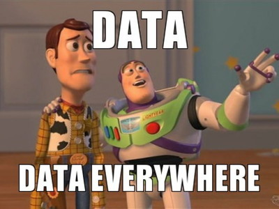
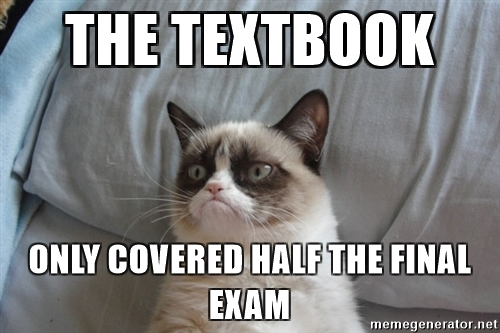

About CSCI 8360
Overview

This course aims to provide students with real-world data science experience. Students form teams, design data science pipelines from the ground-up, and compete to achieve the highest validation accuracy on a hidden test set.
Prerequisites
Machine learning, statistics, linear algebra, and software engineering knowledge are essential. Courses that would satisfy these prerequisites include:
Grading

Projects: 100%
That's it. Projects are all this class is.
That said, project != model accuracy. There's a lot more to building machine learning models than just tuning the accuracy through theoretical insights and architectural tweaks. This class is going to bring those other issues to the forefront--you ignore them at your own peril.
Each project will consist of some intertwining objectives:
- Machine learning model design and accuracy (yes this is a part, but just one part)
- Design choices, software design (software engineering)
- Documentation, tests, repository organization, continuous integration (open source development)
- Lightning talks (5-min elevator speeches)
- Postmortem (critical assessment of successes and failures)
Underlying each project is a theme of teamwork. You'll be assigned random 3-4 person teams for each project (except the last, more on that later). You will need to work together to succeed, as these projects are far too large for one person to handle on their own.
Teams will start with a grade of 85% (B); provided their solution adheres to a baseline standard, that is the grade they will receive. For more points, teams must go "above and beyond" the baseline.
- The baseline theory grade will entail implementing the suggested strategy in each project handout. This will usually be a simple algorithm that, if correctly implemented, will confer a reasonable test performance.
- The baseline engineering grade will entail i) well-designed, modular code, ii) good documentation (in the code, in a README file, and on the GitHub wiki), and iii) effective team dynamics (division of labor in a CONTRIBUTORS file, good use of git commit comments, use of GitHub issue tracker).
There will also be an introductory "Project 0" that aims to familiarize students with the technical infrastructure of the course; this is required but will not be graded.
In addition to each project deliverable, teams will also be required to peer evaluate each other's deliverables (don't worry, evaluation checklists will be provided that you can fill out). Each team will read over the other team's theory, repo (code + docs + tickets + wiki + README + LICENSE + unit tests + whatever else they provide!), and provide feedback on where they did well and where (and how) they can improve.
Finally, there will be lightning talks after each project. Each team will be given 5 minutes to give a talk / presentation / demo on their submission. I strongly encourage you to focus on your work, rather than the problem (since everyone's problem is going to be the same!). What did you try? What worked? What didn't? Why? What would you do differently next time?
The final (4th) project is identical in scope to the other three, with two important differences: i) teams will be chosen by the students (instead of randomly assigned), and ii) the topic will also be selected by the students. Additionally, there will be copious opportunities for extra credit. The project will consist of four components:
- Proposal: A 1-page (maximum) proposal outlining i) the basic data science problem being looked at (type of problem, dataset to use, previous attempts at solving the problem, and outline of the team's approach to solve it), ii) expected outcomes, iii) how success will be evaluated, and iv) who the members of the team are.
- Interim Updates: 5-minute lightning talks on the progress of the project at certain milestones. Special attention should be paid to highlighting progress by the team on their core objectives (i - iii above).
- Final Presentation: A 25-minute talk on the full scope of the project at its conclusion. Special attention should be paid to evaluating what worked, what didn't, and why.
- Deliverables: All the code and other materials should be made publicly available on GitHub for full evaluation.
Attendance
In short, I don't have an attendance policy. You're all adults.
In general, I don't care whether you attend lecture/office hours or not. I try to make lectures helpful and engaging, but if you need (or want) to be elsewhere, that's perfectly fine. Don't ask permission if you can skip class; instead, just tell me that you intend to skip so I don't worry about you. ESPECIALLY don't ask permission if you're sick--STAY HOME until you're well!
That said, there are two exceptions: i) guest lecturers, and ii) lightning or project talks by your fellow classmates. With guest lecturers, please make every possible effort to attend class, but again there is no penalty for not attending. For lightning or project talks by your classmates, listening to talks is considered as much a part of your grade for that project as delivering your own talk, so yes: those are required, but OF COURSE you may skip for extenuating circumstances (personal appointments, health reasons, etc). You DO NOT need to tell me what these reasons are; I trust you as adults to decide where you need to be an why! Just let me know if you will be unable to attend a guest lecture / lightning talk.
Materials

GitHub
All course materials will be posted here, and all project repositories should be created and maintained here (whether they are private or public is up to you, but they should be part of the course's GitHub organization account). You can access the organization account through this link:
The specific repository for the Spring 2023 course materials is located here.
AutoLab
This is where you submit the output of your code for each project. You can access it via the link:
Remember: if you have problems accessing AutoLab, check that you're either on UGA's campus network or are connected to it via VPN. If neither of these are true, you can check out EITS' instructions for getting set up with VPN. If one of them IS true, let me know and we'll see about sorting it out.
Discord
This is where I make will make critical course announcements, so please ensure you are subscribed.
This is the primary point of interaction for asking for and offering help. I will answer questions when I can, but also I encourage everyone to help each other out, too!
Discord has apps for both Android and iOS, so you are welcome to download them if you want! You are also more than welcome to access Discord exclusively via the web. I would encourage you to check Discord at least once every 24 hours so you don't miss any critical announcements.
I also get inundated with emails on a daily basis, so using Discord to ask questions effectively acts as a filter: I'll most likely respond to a Slack question more quickly than I would by email.
If you are not in the Discord server, contact me via email to receive an invite link.
Policies

Projects are due by 11:59:59pm on the noted date; after that time, AutoLab will no longer accept submissions. Furthermore, no commits to GitHub repositories after the stated time will be considered when evaluating.
If you run into problems with your teammates, you first need to work with them and determine a course of action that is beneficial for everyone. If you and your teammates are still unable to reach a consensus, I am happy to help. But the bottom line is: your entire team sinks or swims together. There are no individual grades on the projects, so work with each other, not against one another.
The presence or absence of any form of help or collaboration, whether given or received, must be explicitly stated and disclosed in full by all involved, on the first page of their assignment ("I did not give or receive any help on this assignment" or "I helped [person] with [specific task]."). Collaboration without full disclosure will be handled severely; except in usual extenuating circumstances, my policy is to fail the student(s) for the entire course.
AI-based text or code generation (e.g., ChatGPT or Copilot) are, for all intents and purposes, the same as receiving help or collaboration from others. To put it another way: I don't distinguish between human or AI based help, and frankly it's just as easy for me to tell the difference.
The simple version is: don't copy code or even previous solutions. Given the nature of this course and the need for ground-truth data on the verification end, chances are high you can find similar projects in the wild. Resist that urge; it will be obvious, and we'll have to have an awkward conversation that won't end well.
DO NOT COPY CODE. Don't do it.
Contact
If you need to reach me, there are multiple ways:

- The 8360 Discord server
- Office: Boyd GSRC, Room 638A.
- Email: squinn@cs.uga.edu
- Reclaim: schedule
- Phone: 2-4661